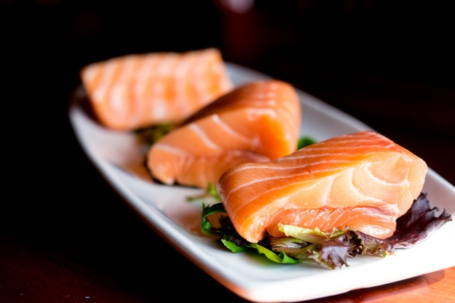

Buen gusto
Las mejores recetas para disfrutar cocinando


Anticuchos
19 Agosto 2018
El anticucho es un tipo de brocheta de origen peruano, que también es popular en algunos países sudamericanos con diferentes variaciones. Consiste en carne y otros alimentos que se asan ensartados en un pincho.

Maria: Que buena receta, me provoca probarlo!!

José_95: Por cuanto tiempo debo mantener el anticucho en la parrilla. Lo probé en mi viaje a Perú, exquisito!
Salmón ahumado
28 Agosto 2018
El salmón ahumado es un producto que se consigue exponiendo el salmón al humo, en condiciones especiales, lo que le permite un mayor tiempo de conservación y un sabor diferente. Se presenta en forma de grandes filetes. Se conocen dos tipos: ahumado frío en rebanadas a bajas temperaturas, y ahumado en caliente.
Edith_LM: Me encanta el salmón, es un pescado muy suave!!